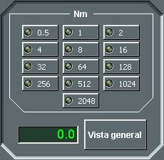
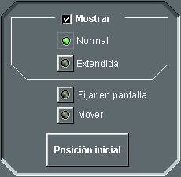
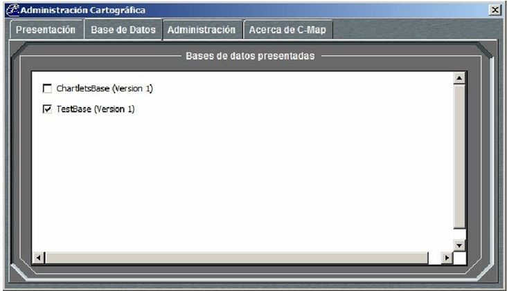
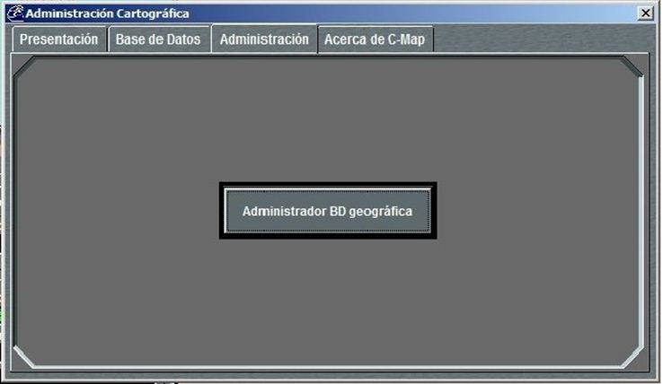

Menú Ver
Las opciones del menú Ver son:
- Pantalla Completa: Oculta el Área de Información Táctica, de forma que se muestra solamente la Presentación Táctica ocupando la pantalla completa. Esta opción es muy útil para presentar el escenario táctico mediante proyectores o en pantallas cuya resolución máxima sea 1024x768.
- Paralelos y Meridianos: Mientras esta opción esté seleccionada, el sistema presenta sobre la carta una rejilla de meridianos y paralelos.
- Escala: Al seleccionar esta opción, se abre la siguiente ventana de selección de escala, donde el operador puede seleccionar directamente la escala de presentación, bien introduciendo el valor de escala deseado y pulsando Enter, o bien seleccionándola de entre una de las predefinidas. Pulsando Vista General, se ajusta automáticamente la escala para presentar de forma completa la carta más grande incluida en el Ejercicio.
- Movimiento: Desde esta opción se puede seleccionar el tipo de presentación, con movimiento absoluto o relativo, para la presentación táctica.
- Absoluto: La carta permanece fija en pantalla.
- Relativo: La posición propia permanece fija en el centro de la pantalla y la carta se mueve manteniendo el norte hacia arriba.
- Etiquetas: Al seleccionar esta opción, se abre la siguiente ventana de opciones de presentación etiquetas:
- Mostrar: Mientras esta opción esté seleccionada, se muestran en la presentación táctica las etiquetas de las trazas. Si se desactiva esta opción, las etiquetas desaparecen.
- Normal: Mientras esta opción esté seleccionada las etiquetas de las trazas se presentan en su configuración normal.
- Extendida: Mientras esta opción esté seleccionada las etiquetas de las trazas se presentan en su configuración extendida.
- Fijar en pantalla: Mientras esta opción esté seleccionada, todas las etiquetas de las trazas permanecen fijas y no siguen el movimiento de la traza correspondiente. La posición en la que permanecen puede ser modificada si está activada la siguiente opción.
- Mover: Mientras esta opción esté seleccionada, puede moverse la etiqueta de cada traza haciendo clic sobre ella con el botón izquierdo del trackball y arrastrándola a la posición deseada.
- Posición Inicial: .Restaura a su posición por defecto todas las etiquetas que se hayan movido con la opción Mover.
- Simbología: Desde esta opción se puede seleccionar el tipo de simbología (ver Anexos – Simbología) empleada para la representación de contactos:
- STANAG pequeño: Simbología STANAG 4420 con tamaño 25x25 píxeles.
- STANAG grande: Simbología STANAG 4420 con tamaño 33x33 píxeles.
- NTDS pequeño: Simbología NTDS con tamaño 25x25 píxeles.
- NTDS grande: Simbología NTDS con tamaño 33x33 píxeles.
- Banderas nacionales: Mientras esta opción se encuentre seleccionada, si la Consola es de Instructor, en la Presentación Táctica se mostrará junto a las trazas de las unidades un icono de la bandera representativa de su nacionalidad.
- Administración de la Cartografía: Al seleccionar esta opción se abre la ventana de administración de la cartografía. Esta opción sólo se muestra si el simulador dispone de Cartografía C-Map.
- Categorías de Presentación - Se pueden seleccionar tres categorías:
- Base: Al seleccionar esta categoría, se aplica el filtro ECDIS "Base" a la presentación de la carta. Con este filtro, se muestra el nivel mínimo de información necesario para la navegación a cualquier hora, en cualquier zona geográfica y en cualquier circunstancia, sin que sea suficiente para una navegación segura.
- Línea de costa (pleamar).
- Veril de seguridad.
- Indicación de peligros.
- Sistemas de organización del tráfico marítimo.
- Estándar: Al seleccionar esta categoría, se aplica el filtro ECDIS "Standard" a la presentación de la carta. Con este filtro, se muestra toda la información que se requiere normalmente para navegar.
- Línea de costa (bajamar).
- Ayudas a la navegación, fijas y flotantes.
- Límites de pasos, canales, etc.
- Puntos notables tanto visibles como radar.
- Zonas prohibidas y restringidas.
- Límites de la escala de cartas.
- Indicación de advertencias.
- Todo: Al seleccionar esta categoría, no se aplica ningún filtro a la presentación de la carta y por tanto se muestran todos los objetos geográficos.
- Sondas.
- Tuberías submarinas.
- Derrotas de transbordadores.
- Detalles de todos los peligros.
- Detalles de ayudas la navegación.
- Contenido de advertencias.
- Nombres de lugares.
- Modo de Presentación – Permite elegir la apariencia de la carta.
- Texto – Permite seleccionar el texto que se muestra en la carta.
- Elementos de Presentación – Permite seleccionar información adicional para mostrarla en la carta.
- Opciones de Presentación - El operador puede seleccionar dos tipos diferentes de presentación de las cartas y de los símbolos de los objetos gráficos.
- S52 - Se basa en el modelo de presentación S52.
- C-Map - Se aproxima al modelo de presentación estándar internacional "Chart 1".
- Opciones de Simbología - Estas opciones sólo se aplican si el modo de presentación es C-Map.
- Simplificada - Cuando se selecciona esta opción, los símbolos aparecen simplificados (IMO Draft Performance Standards).
- Tradicional - Cuando se selecciona esta opción, se muestra la simbología estándar (International Chart 1).


Mediante este diálogo el operador podrá realizar las siguientes acciones:
Si se están mostrando etiquetas, el operador podrá seleccionar:
La ventana de administración cartográfica tiene varias vistas que se describen a continuación.

Presentación
La pestaña presentación tiene las siguientes opciones:
La información de la carta se reduce a los siguientes elementos:
En este caso, la carta muestra la información Base y además los siguientes elementos:
En la carta se muestran, además de los anteriores, los siguientes elementos:
Bases de Datos
La pestaña Bases de Datos muestra una ventana en la que se puede elegir la base de datos usada para la presentación de las cartas.

Administración
La pestaña Administración muestra un botón desde el que se abre la ventana de gestión de la base de datos de C-Map “C Map Chart manager”.
